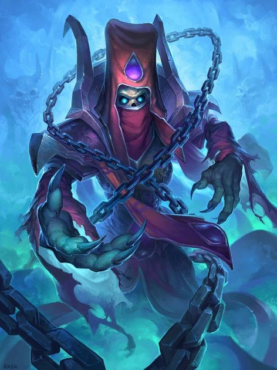

Lady Deathwhisper
| Lady Deathwhisper | |
|---|---|
|  | |
| Race | Lich " (Undead)" |
| Level | ?? Boss |
| Reaction | Alliance/Horde |
| Affiliation(s) | Scourge, Cult of the Damned |
| Loction | Oratory of the Damned (Icecrown Citidel) |
| Status | Deceased (lore), Killable |
{kind=link}
Lady Deathwhisper " is the Supreme Overseer of the Cult of the Damned and the second boss of the Icecrown Citadel raid. The fight is mostly a DPS race, but also requires high awareness from all raid members. The 25-player Heroic version of this boss is one of the most difficult encounters whithin this instance. "
-
1.
Abilities
-
1.1
10-player mode
- 1.1.1 Lady Deathwhisper
- 1.1.2 Cult Adherent/Empowered Adherent/Reanimated Adherent
- 1.1.3 Cult Fanatic/Deformed Fanatic/Reanimated Fanatic
- 1.1.4 Vengeful Shade
-
1.2
25-player
- 1.2.1 Lady Deathwhisper
- 1.2.2 Cult Adherent/Empowered Adherent/Reanimated Adherent
- 1.2.3 Cult Fanatic/Deformed Fanatic/Reanimated Fanatic
- 1.2.4 Vengeful Shade
-
1.1
10-player mode
- 2. Preperation
-
3.
Phase One
- 3.1 Basic Tactic
- 3.2 Alternate Tactic
- 4. Phase Two
- 5. Heroic Mode
Abilities
10-player
Both Phases
- Death and Decay - 4500 Shadow damage inflicted every 1 sec to all targets in the affected area for 10 seconds. Instant. 8 yd radius. 6000 on Heroic
- Dominate Mind - Subdues the will of target enemy, causing them to become charmed for 20 sec, with their damage dealt increased by 200% and healing done increased by 500% during that time.
Phase one only
- Animate Dead! - Reanimates a Cult Adherent or a Cult Fanatic.
- Dark Empowerment - Empowers the recipient's spells, causing them to deal area damage and making them uninterruptable. 2 sec cast.
- Dark Transformation - Transforms one random Cult Fanatic into an undead behemoth, increasing damage dealt by 100%. 2.5 second cast.
- Mana Barrier - Envelops the caster in a powerful barrier that continually replenishes any lost health, at the expense of the caster's mana.
- Shadow Bolt - Inflicts 9,188 to 11,812 Shadow damage to an enemy. 100 yard range. 2 seconds cast.
Phase two only
- Frostbolt - Inflicts 37,000 Frost damage to an enemy and reduces its movement speed by 50% for 4 seconds. 2 sec cast. Interruptable but unresistable on heroic difficulty. 44,850 to 47,150 on Heroic.
- Frostbolt Volley - Inflicts 10800 to 13200 Frost damage to nearby enemies, reducing their movement speed for 4 sec. Instant.
- Summon Vengeful Shade - Calls an unattackable Vengeful Shade that chases a player for a short time, casting Vengeful Blast upon catching them
- Touch of Insignificance - Reduces the target's threat generation by 20%. Stacks up to 5 stacks.
Cult Adherent/Empowered Adherent/Reanimated Adherent
- Health: 108,000 (151,000 on Heroic)
- Adherent's Determination - Nearly impervious to magical damage. (99% Reduction) Reanimated Adherent only
- Curse of Torpor - Afflicts an enemy target with a curse that increases ability cooldowns by 15 seconds. (Curse)
- Deathchill Bolt - Deals 8788 to 10212 Shadowfrost damage to an enemy target. 2 sec cast. 11563-13437 on Heroic
- Frost Fever - A disease dealing Frost damage every 3 seconds and reducing the target's melee and ranged attack speed by 14% for 15 seconds.
- Shroud of the Occult - Envelops the caster in a powerful barrier that reflects all harmful magic, prevents cast inturruption, and absoarbs up to 100,000 damage before breaking. Used randomly
- Deathchill Blast - Deals 11563 to 13437 Shadowfrost damage to all enemies within 10 yards of the target. 2 sec cast. Only cast while empowered. 11563-13437 on Heroic
- Dark Martyrdom - The caster surrenders to dark energies, exploding to deal 12000 Shadowstorm damage to all enemies within 15 yards, and leaving only skeletal remains behind, thus becoming reanimated after a few seconds of death. Used randomly
Cult Fanatic/Deformed Fanatic/Reanimated Fanatic
- Health: 135,000 (202,000 on Heroic)
- Fanatic's Determination - Nearly impervious to physical damage. (99% Reduction) Reanimated Fanatic only
- Necrotic Strike - Strikes an enemy with a cursed blade, dealing 70% of weapon damage to the target and inflicting a lasting malady that negates the next 14000 healing received. Instant. 20 sec duration. 20000 healing on Heroic
- Vampiric Might - Empowers the caster with dark might, increasing all damage dealt by 25% and heals the caster for 300% of his damage dealt. Instant. Magic. 15 sec duration. Used randomly.
- Shadow Cleave - Inflicts 15913 to 17587 Shadow damage to enemies in front of the attacker. Next melee. 8 yard radius. 19000-21000 on Heroic (6 sec cooldown)
- Dark Martyrdom - The caster surrenders to dark energies, exploding to deal 12000 Shadowstorm damage to all enemies within 15 yards, and leaving only skeletal remains behind, thus becoming reanimated after a few seconds of death. Used randomly
Vengeful Shade
- Vengeful Blast - Inflicts 17,400 to 18,700 Shadowfrost damage to all enemies within 15 yards of the target.
25-Player
- Death and Decay - 4500 Shadow damage inflicted every 1 sec to all targets in the affected area for 10 seconds. Instant. 8 yd radius. 6000 on Heroic Dominate Mind - Subdues the will of target enemy, causing them to become charmed for 20 sec, with their damage dealt increased by 200% and healing done increased by 500% during that time. Targets three players on 25-man heroic difficulty.
Phase one only
- Animate Dead! - Reanimates a Cult Adherent or a Cult Fanatic.
- Dark Empowerment - Empowers the recipient's spells, causing them to deal area damage and making them uninterruptable. 2 sec cast.
- Dark Transformation - Transforms one random Cult Fanatic into an undead behemoth, increasing damage dealt by 100%. 2.5 second cast.
- Mana Barrier - Envelops the caster in a powerful barrier that continually replenishes any lost health, at the expense of the caster's mana.
- Shadow Bolt - Inflicts 9,188 to 11,812 Shadow damage to an enemy. 100 yard range. 2 seconds cast.
Phase two only
- Frostbolt - Inflicts 50,700 Frost damage to an enemy and reduces its movement speed by 50% for 4 seconds. 2 sec cast. Interruptable but unresistable on heroic difficulty. 44,850 to 47,150 on Heroic.
- Frostbolt Volley - Inflicts 14400 to 17600 Frost damage to nearby enemies, reducing their movement speed for 4 sec. Instant.
- Summon Vengeful Shade - Calls an unattackable Vengeful Shade that chases a player for a short time, casting Vengeful Blast upon catching them
- Touch of Insignificance - Reduces the target's threat generation by 20%. Stacks up to 5 stacks.
Cult Adherent/Empowered Adherent/Reanimated Adherent
- Health: 161,000 (323,000 on Heroic)
- Adherent's Determination - Nearly impervious to magical damage. (99% Reduction) Reanimated Adherent only
- Curse of Torpor - Afflicts an enemy target with a curse that increases ability cooldowns by 15 seconds. (Curse)
- Deathchill Bolt - Deals 8788 to 10212 Shadowfrost damage to an enemy target. 2 sec cast. 11563-13437 on Heroic
- Frost Fever - A disease dealing Frost damage every 3 seconds and reducing the target's melee and ranged attack speed by 14% for 15 seconds.
- Shroud of the Occult - Envelops the caster in a powerful barrier that reflects all harmful magic, prevents cast inturruption, and absoarbs up to 100,000 damage before breaking. Used randomly
- Deathchill Blast - Deals 11563 to 13437 Shadowfrost damage to all enemies within 10 yards of the target. 2 sec cast. Only cast while empowered. 11563-13437 on Heroic
- Dark Martyrdom - The caster surrenders to dark energies, exploding to deal 12000 Shadowstorm damage to all enemies within 15 yards, and leaving only skeletal remains behind, thus becoming reanimated after a few seconds of death. Used randomly
Cult Fanatic/Deformed Fanatic/Reanimated Fanatic
- Health: 202,000 (404,000 on Heroic)
- Fanatic's Determination - Nearly impervious to physical damage. (99% Reduction) Reanimated Fanatic only
- Necrotic Strike - Strikes an enemy with a cursed blade, dealing 70% of weapon damage to the target and inflicting a lasting malady that negates the next 14000 healing received. Instant. 20 sec duration. 20000 healing on Heroic
- Vampiric Might - Empowers the caster with dark might, increasing all damage dealt by 25% and heals the caster for 300% of his damage dealt. Instant. Magic. 15 sec duration. Used randomly.
- Shadow Cleave - Inflicts 15913 to 17587 Shadow damage to enemies in front of the attacker. Next melee. 8 yard radius. 19000-21000 on Heroic (6 sec cooldown)
- Dark Martyrdom - The caster surrenders to dark energies, exploding to deal 12000 Shadowstorm damage to all enemies within 15 yards, and leaving only skeletal remains behind, thus becoming reanimated after a few seconds of death. Used randomly
Vengeful Shade
- Vengeful Blast - Inflicts 23,200 to 25,000 Shadowfrost damage to all enemies within 15 yards of the target.
Strategy
Editor Mode: +
test